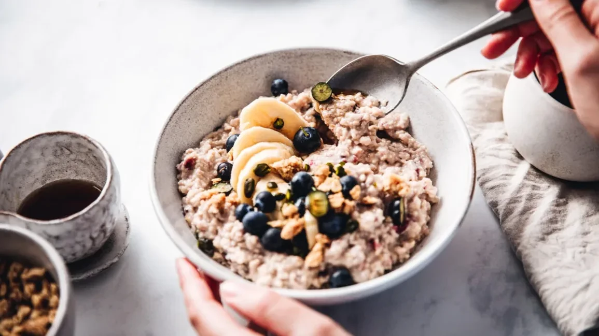
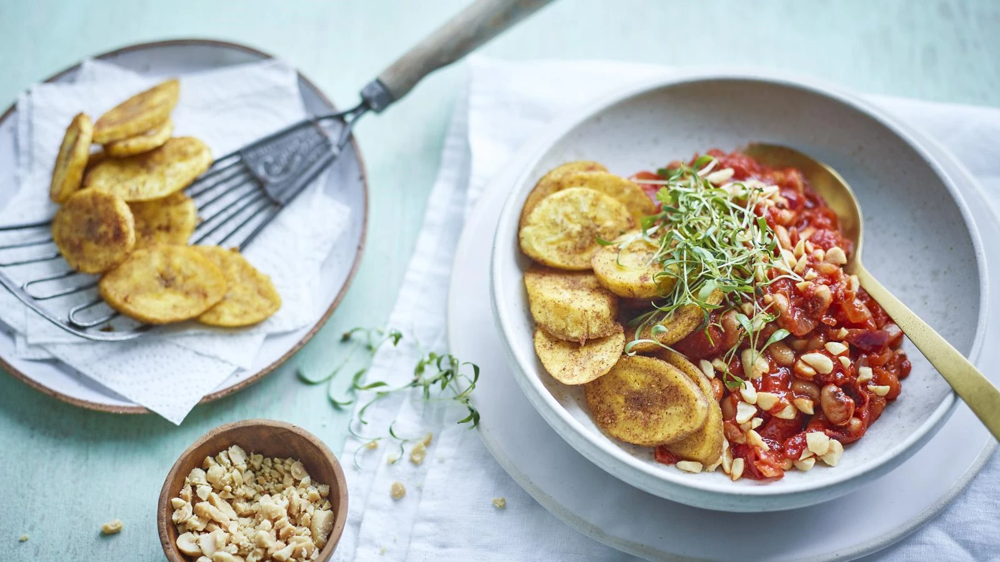
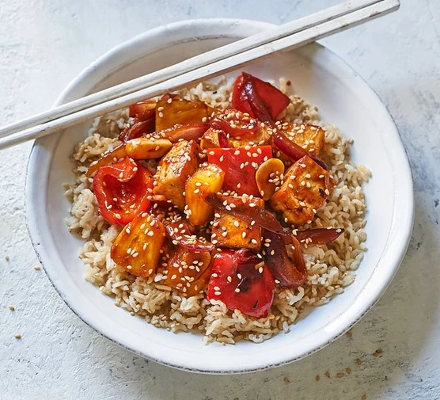

Easy Meals You Can Try
You can make nutritious dinners quickly and easily. Options can include
one-pot meals, grain bowls, and sheet pan meals.
You may think that preparing healthy, delicious dinners at home is
acomplicated process, but I’m here to tell you that it doesn’t have to be.
Even though I love food and enjoy cooking, I like to keep it simple when
it comes to mealtime. This means choosing recipes that are easy to follow
and don’t involve complicated cooking techniques or seemingly never-ending
steps. Here are my go-to simple dinner recipes that can help you get a
healthy meal on the table quickly.
Deep Fied Doughnuts(Puff Puff)
 Puff-puff is a traditional snack made of fried dough and eaten across
Africa, especially in the west of the continent. The name "puff-puff" is
from Nigeria, but many other names and varieties of the pastry exist
Puff-puff is a traditional snack made of fried dough and eaten across
Africa, especially in the west of the continent. The name "puff-puff" is
from Nigeria, but many other names and varieties of the pastry exist
Oatmeal

Healthy Oatmeal Recipes are perfect for a simple breakfast! Baked
oatmeal, overnight oatmeal, oatmeal recipes to lose weight - tons to
try!
Beans stew

Red red is a Ghanaian bean stew with fried plantains, garnished with
gari. It's a delightful dish, naturally gluten-free and suitable for
vegans.

Enjoy our sweet and sour tofu for one. With pineapple, red pepper, onion
and Chinese flavourings, it's vegan and healthy, delivering three of
your 5-a-day.